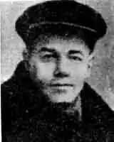

Михайло Яловий
(1895-1937)
Яловий Михайло Омелянович народився 5 червня 1895 року в селі Дар Надєжда, на Полтавщині (тепер Сахновищенський район Харківської області) в сім'ї волосного писаря. 1916 року закінчив Миргородську гімназію і вступив на медичний факультет Київського університету. Тут він одразу ж прилучився до революційного руху, пройнявшись симпатіями до есерів. Після Лютневої революції повернувся в рідні краї, де проводив агітацію серед селян, був обраний головою Костянтиноградського революційного комітету, під час гетьманщини сидів у полтавський в'язниці. За дорученням боротьбистів у роки громадянської війни вів підпільну роботу в Одесі, на Херсонщині, в Галичині. Після встановлення Радянської влади разом із Василем Блакитним видавав газету "Боротьба". У березні 1920 року вступив до КП(б)У, із зарахуванням стажу з 1918 року посів місце редактора газети "Селянська біднота". Потім деякий час працював у газеті "Вісті" Київського губревкому, представником українського уряду в Москві, відповідальним секретарем журналу "Червоний шлях" редактором "Вапліте" членом редколегії "Журналу для всіх", директором видавництва ЛІМ (Література і Мистецтво). Брав активну участь у створенні літературної організації "Комункульт", був першим президентом ВАПЛІТЕ. Друкувався у збірниках "Жовтень", "Шляхи мистецтва", "Всесвіт", "Знання" та ін. Окремими виданнями вийшли друком збірка поезій "Верхи" (1923), комедія "Катина любов, або будівельна пропаганда" (1928), роман "Золоті лисенята" (1929). Починав творчий шлях під псевдонімом Михайло Красний. Сповнений віри в революційні ідеали, побудову щасливого життя і через масову періодику агітував за нього й своїх читачів. Популярною була його агітаційна казка "Треба розжувати", що друкувалася в "Селянській бідноті" (червень 1920) і тоді ж вийшла окремим виданням. 1921 року разом із М. Семенком та В. Алешком започатковує "Ударну групу поетів-футуристів" у Харкові. Невдовзі в більшому об'єднанні підписує програмну редакційну статтю футуристів у альманасі "Семафор у майбутнє" (1922). Через рік з'являється перша і остання його збірка "Верхи" (1923). Але швидко облетить сухозлотиця експериментування і вже на початку 1925 року з футуристичного "Комункульту", письменник разом з О. Слісаренком та Миколою Бажаном переходить до "Гарту", де тривала конфронтація між стриманим В. Блакитним та імпульсивним Миколою Хвильовим. Згодом у критиці усталиться думка Володимира Коряка, що "Гарт" знищено прихильниками Миколи Хвильового "за допомогою групи Ялового". Як там не було, але відтоді Хвильовий з Юліаном Шполом були до останніх днів життя найщирішими друзями. Це підтверджує й спільність позицій письменників у роботі редколегії журналу "Червоний шлях" (звідки обидва були одночасно звільнені постановою Політбюро ЦК КП(б)У від 20 листопада 1926 року), у всеукраїнській дискусії 1925-1928 років, та в літературній організації ВАПЛІТЕ. Хоча вага діяльності Хвильового, звичайно, була істотно значнішою, ніж Михайла Ялового, останній так само публічно приймав на себе всі удари партійно-адміністративної системи. Варто назвати, наприклад, принциповий публіцистичний виступ Михайла Ялового "Санкт-Петербурзьке холуйство" в оборону національної самобутності української культури — з приводу редакційної "Самоопределение или шовинизм?" опублікованої у ленінградському журналі "Жизнь искусства" 1926, N 14. У середині 20-х років Юліан Шпол почав писати малу прозу в романтичному ключі очевидно під впливом Миколи Хвильового. Основним гаслом (ідеєю) яких є: революція — понад усе! Заради неї можна йти на будь-які жертви... У цьому ж ключі написано роман "Золоті лисенята". Але романтичний стиль поєднано з імпресіонізмом. 1929 року "Золоті лисенята" з'явилися окремим виданням, потім — повторно. Та широкого резонансу роман не набрав, залишився непомічений критикою. Пробував письменник виявити себе і в гумористично-іронічній прозі та драматургії: комедія "Катина любов або будівельна пропаганда" (1928), оповідання "Голомозий гевал" (1927) та "Веселий швець Сябро" (1930). Але слід зазначити, що Михайло Яловий насамперед був громадським діячем, дбайливим, щирим товаришем, а вже опісля — митцем. Його твори немов "запізнювалися" у своїй функціональності, у них майже нема "живого" навколишнього матеріалу і тому часто на момент публікації не знаходили свого читача. Художнім об'єктом Юліана Шпола залишалися романтика відшумілої доби в той день, коли була чистою віра у високі ідеали революції, у їхнє неодмінне звершення на рідній землі. Можливо оминаючи дійсність, не хотів ятрити своє сумління розчаруванням. А "поблажливість" до його творів у середовищі прискіпливих ваплітян пояснювалася, можливо й тим, що більшість з них в його героях крізь символічні образи, романтичний ореол впізнавати свою юність яку, попри всі розчарування, викреслити з пам'яті неможливо. В ніч з 12 на 13 травня 1933 року на квартирі Михайла Ялового працівники ДПУ УРСР провели трус, а господаря заарештували. 31 травня 1933 року ЦКК КП(б)У виключила з партії Михайла Омеляновича Ялового з мотивацією, що він "пробрався" в її ряди "з метою створення контрреволюційної фашистської організації, яка ставила перед собою завдання повалити Радянську владу". Оперуповноважений секретно-політичного відділу ДПУ УРСР Пустовойтов у своїх звинувачувальних висновках після допитів стверджував, що член підпільної боротьбистської організації Яловий М.О. входить до центру УВО. За завданням організації, "яку очолював Шумський, брав участь у групуванні контрреволюційних кадрів серед літераторів... Після розгрому шумськізму і переходу боротьбистської організації до нової тактики підготовки збройного повстання Яловий брав активну участь у контрреволюційній повстанській роботі, особисто проводячи вербування в Красноградському районі". Вів також шпигунську роботу, передаючи у польське консульство матеріали шпигунського характеру, мав доручення "підготувати замах на тов. Постишева". Яловий винним себе не визнав. Проте судова "Трійка" при колегії ДПУ УРСР своєю постановою від 23 червня 1933 року позбавила його волі на 10 років. Спецконвоєм 11 травня 1934 року він був направлений у Сєвєрлаг ОДПУ м. Лодейне поле. На засланні судова трійка УНКВС Ленінградської області 9 жовтня 1937 року винесла вирок: вища міра покарання через розстріл. 19 червня 1957 року Військовий трибунал Ленінградського військового округу скасував попередні вироки і припинив справу за відсутністю складу злочину. Михайло Яловий був реабілітований посмертно.